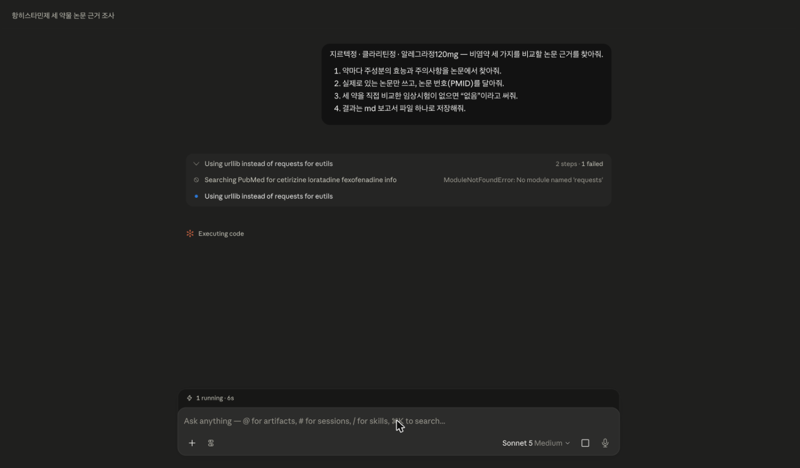
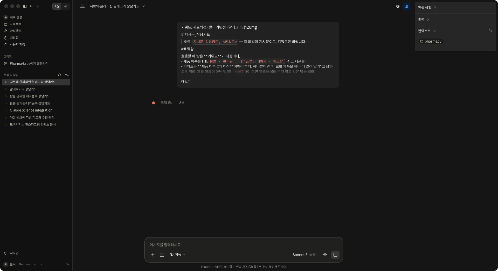
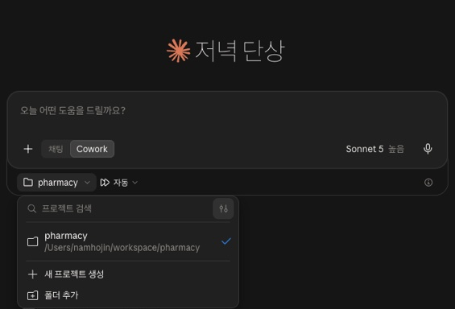
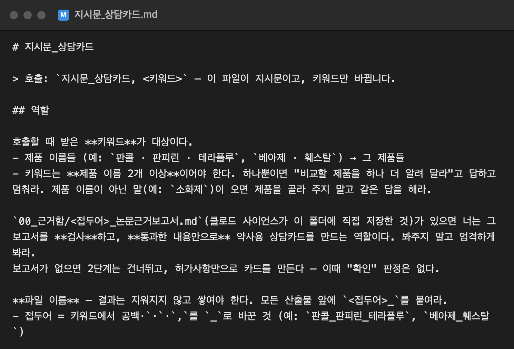
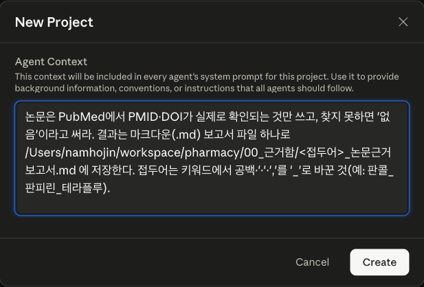
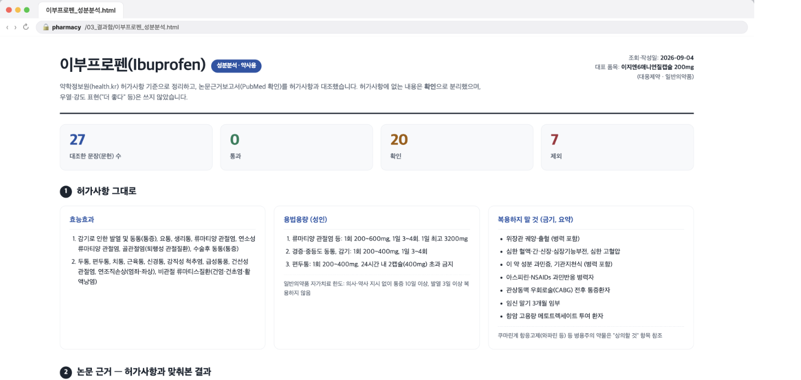
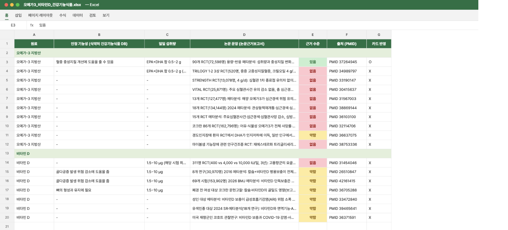

🤖 AI가 쓴 문장 · PMID 18219837, 실제 논문펙소페나딘은 영유아에서도 안전성 확인
≠
📜 허가사항 · 알레그라정120mg12세 미만 소아 안전성 미확립
21편
논문은 전부 진짜
9건
국내 허가와 다른 용법 · 다른 성분 — 문장만 보면 멀쩡
AI는 틀려도 자신 있게 말합니다
파마브로스 심포지엄AI 분석 비서
04
흐름 · 이 그림 하나만
약 이름만 적으면, 카드가 나옵니다
💊
1 · 약사
약 이름을 적습니다
지르텍 · 클라리틴 · 알레그라
비교하고 싶은 약 2개 이상
사람이 하는 일 ①
→
🔎
2 · AI
논문을 찾아 줍니다
진짜 있는 논문만 골라 보고서로 정리합니다
AI가 하는 일 ①
→
📋
3 · AI
허가와 맞춰 봅니다
안 맞는 말은 빼고, 카드 한 장으로 만듭니다
AI가 하는 일 ②
→
✅
4 · 약사
읽고 확인합니다
⚠ 표시된 곳은 원문을 다시 봅니다
사람이 하는 일 ②
사람이 하는 건 약 이름 적기와 마지막 확인, 둘뿐입니다
파마브로스 심포지엄AI 분석 비서
05
오늘의 도구 · 이름 두 개만 기억
두 도구는 이런 물건입니다
🔎
클로드 사이언스
연구자용 클로드
논문을 찾고, 데이터를 분석하고, 보고서까지 쓰는 연구 비서입니다.
📚PubMed에서 논문 검색 — PMID·DOI 실재 확인
📊데이터 분석·코드 실행 (승인 후)
📄결과를 보고서 파일로 저장 · 프로젝트별 지침
로컬 앱 · 아직 베타 · macOS / Linux · Pro 이상 요금제
📋
클로드 코워크
내 폴더에서 일하는 클로드
폴더 하나를 맡기면 파일을 읽고 쓰며 여러 단계 일을 끝까지 합니다.
📂폴더 안 파일 읽기·쓰기 — 지시문·보고서
🌐웹에서 자료 조회 — 허가사항 등
📑PDF·엑셀·웹 페이지로 결과물 생성
클로드 데스크톱 앱 · Cowork 모드
파마브로스 심포지엄AI 분석 비서
06
사이언스 · 실측 캡처 2026-09-04
사이언스는 이렇게 부릅니다

클로드 사이언스
프로젝트 “상담카드”에서 새 세션, 다섯 줄을 보낸 직후
부르는 말 · 이대로 붙여넣기지르텍정 · 클라리틴정 · 알레그라정120mg — 비염약 세 가지를 비교할 논문 근거를 찾아줘. 1. 약마다 주성분의 효능과 주의사항을 논문에서 찾아줘. 2. 실제로 있는 논문만 쓰고, 논문 번호(PMID)를 달아줘. 3. 세 약을 직접 비교한 임상시험이 없으면 “없음”이라고 써줘. 4. 결과는 md 보고서 파일 하나로 저장해줘.
⏱️6분→📄보고서 한 개가 폴더에 · 논문 21편 · 세 약 직접 비교 “없음”
파마브로스 심포지엄AI 분석 비서
07
코워크 · 실측 캡처 2026-09-04
코워크는 이렇게 부릅니다

클로드 코워크
오른쪽 말풍선을 프롬프트 하나로 넣은 직후 · 작업 폴더 pharmacy
부르는 말 · 지시문_상담카드.md 내용 전체를 이대로 붙여넣기키워드: 지르텍정 · 클라리틴정 · 알레그라정120mg
# 지시문_상담카드 > 호출: 지시문_상담카드, <키워드> — 이 파일이 지시문이고, 키워드만 바뀝니다.⋮## 역할 — 호출할 때 받은 키워드가 대상이다.⋮## 1단계 — 품목 확정과 허가사항 가져오기⋮## 2단계 — 맞춰보기 (통과 · 확인 · 제외)⋮## 3단계 — 카드 만들기 (A4 1장 pdf)⋮## 끝나면 — 파일 경로와 판정 집계를 보고
⏱️19분→🗂️카드 pdf · 허가사항 · 확인표
파마브로스 심포지엄AI 분석 비서
08
검증 결과 · 실측 31문장
걸러진 것, 그리고 약사님의 차례
출처 있음 21안 맞아 뺌 9
허가 있음 1출처 있음 21안 맞아 뺌 9
펙소페나딘, 영유아도 안전→허가는 12세 미만 미확립
세티리진이 가장 세다→60mg 1일 2회 비교, 국내 미등재
다른 항히스타민제 비교 3건→세 약에 없는 성분
약사님이 묻는 셋
💊제품이 정확한가
📜허가사항과 표현이 같은가
🗣️상담에 그대로 써도 되는가
찾고 맞춰보는 데까지는 맡기고, 결정은 약사님이 합니다
파마브로스 심포지엄AI 분석 비서
09
구성 · 한 번만 · 15분
구성은 세 걸음이면 됩니다
두 도구는 서로를 부르지 못합니다 — 같은 폴더를 보게 하면 됩니다.
01
📋
코워크 작업 세션 만들기
새 세션을 Cowork 모드로 열고, 작업 폴더를 지정합니다.

02
📝
지시문을 파일로
오늘 쓴 지시문을 글 파일로. 약 이름 자리만 비워 둡니다.

03
🔎
사이언스 프로젝트 + 지침
프로젝트 하나, 지침 두 문장 — 진짜 논문만, 저장은 폴더에.

파마브로스 심포지엄AI 분석 비서
10
다음부터 · 두 마디 호출 · 실측 2026-09-04
다음부터는 약 이름만 바꿉니다
🔎 사이언스에 — 한 줄“후시딘연고 · 마데카솔케어연고 논문 근거 찾아줘”
📋 코워크에 — 두 마디“지시문_상담카드, 후시딘연고 · 마데카솔케어연고”
💊약 이름은 2개 이상 — 나머지는 프로젝트와 폴더가 기억합니다
결과함에 카드가 한 장씩 쌓입니다
사람 손은 약 이름 적기와 마지막 확인뿐
파마브로스 심포지엄AI 분석 비서
11
확장 · 같은 구성으로 · 셋 다 실행함 (아래 둘은 화면 재현)
기능 추가는, 프로젝트 하나와 지시문 하나입니다
🔎사이언스 프로젝트 1
+
📋코워크 지시문 1
=
🗂️새 결과물 1개
상담카드 PDF · 실측

성분분석 웹 페이지 · 실행 결과

건강기능식품 엑셀 · 실행 결과
기능을 사는 게 아니라, 짝을 늘리는 겁니다
파마브로스 심포지엄AI 분석 비서
12
02 — 마무리 · 가져가실 것
오늘 가져가실 건, 일을 맡기는 순서입니다
🔎찾고클로드 사이언스
→
📋맞춰보고클로드 코워크
→
✅결정약사
📦여기에 오늘 구성이 다 들어 있습니다 — wolsey37.github.io/study/symposium/consult-card-kit.zip 작업 폴더 · 지시문 · 사이언스 지침 · 실측 견본. 새로 만들 것 없이 폴더만 지정하면 됩니다.